Importing That All-Important Data
Importing That All-Important Data
Data Import Preparation
Now that the cubes are built, we turn to prepping the data that will be imported into them. The setup and the final import can be broken down into stages. These are:
Set up the data source artifact.
Create the transformation rules artifact that maps source items and target members.
Add the data source and transformation rule artifacts to the Workflow Profile.
The end-user can now import data from OnePlace into the cube.
This chapter will focus on creating the data source and creating the transformation rules, which can then be used in the later chapter on workflow setup.
The learning journey for this chapter is:
Figure 5.1
As a reminder, in chapter 4, when discussing the cube integration tab, we have already decided – during our cube design – which dimensions will be part of the data load by leaving the Enabled configuration as True. These dimensions will then be seen in our data source creation. The remaining dimensions that are not used will be set to False and will not be seen when it comes to the data source.
Before embarking on the mapping of dimensions to a source file, it is worth looking at what types of data sources OneStream handles.
Importing That All-Important Data › Data Import Preparation
Knowing Your Data Source Types
The creation of the data source tells OneStream how to interpret incoming metadata and data for the import required during the end-user’s workflow tasks. The blueprint defines how the data should be parsed and imported and is based upon the cube and Scenario Type data source assignment. There are four different types:
Importing That All-Important Data › Data Import Preparation › Knowing Your Data Source Types
Fixed Files
A consistent format with the fields mapped by column ranges, based on the number of characters within source files. Usually a text (.txt) file. Example to follow.
Importing That All-Important Data › Data Import Preparation › Knowing Your Data Source Types
Delimited Files
Data is separated by a special character such as a comma or a semi-colon, though – typically – a comma separator variable (CSV) file. Example to follow.
Importing That All-Important Data › Data Import Preparation › Knowing Your Data Source Types
Connectors
Connectors use a business rule to import data directly from either an external system using an Application Programming Interface (API), or from custom tables within the OneStream application. The data source requires a connector business rule that contains custom .NET code.
Connectors are used to attach directly to either Structured Query Language (SQL) sources, or a file-based setting that connects to a FTP/SFTP (secure file transfer protocol), Azure, or Amazon type service. Other options for connectors are a webservice connection (databases that use XML or JSON, for example), or smart integration connections (SIC) which connect to items that are non-public facing IPs but which need a direct connection to OneStream.
Connector data source types are created to have, for example, a direct connection to an ERP system (enterprise resource planning), where data can then be pulled into OneStream seamlessly. Or from web sources, to pull, for example, FX rates from a website.
This data source type is beyond the scope of this book, but discussed further in the
Foundation Handbook.
Importing That All-Important Data › Data Import Preparation › Knowing Your Data Source Types
Data Management Export Sequences
Used to copy data from one cube or scenario into another through a workflow’s import task. For more advanced jobs, this data source type can be used to extract data from OneStream for backup reasons or to import to other systems.
Importing That All-Important Data
Creating a Data Source
For Top Training, we will be loading a delimited file. The first step is to create the data source and use an example template file to assist with our mapping. (Using the connector option would not require a template file, as this directly queries a source database) .
The template file and its format will mirror the end-user’s file, that will eventually be uploaded as part of their import workflow task. The idea is to create the correct mapping of each column in the source to the dimensions in the cube to which we are loading data.
For the load to take place, we must make sure the items in the source file columns match the members in the dimension. This is discussed in the transformation rules section later.
Importing That All-Important Data › Creating a Data Source
Creating a Delimited File Data Source
The Application tab has a subsection called Data Collection where the Data Sources menu sits. Once the source type has been established, we create the data source.
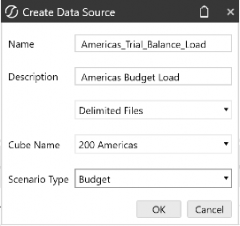
Figure 5.2
With the data source now created, the template file is then uploaded using the Upload File icon as seen in Figure 5.3. The file name prompt then lets you select the file, and see it previewed as shown. Next, select each dimension type and map it to its corresponding source column.
Note in Figure 5.3 that only the three User Defined dimensions are showing, and we don’t see the dimensions UD4 to UD8 that were set to False in the Enabled settings of the cube Integration tab.
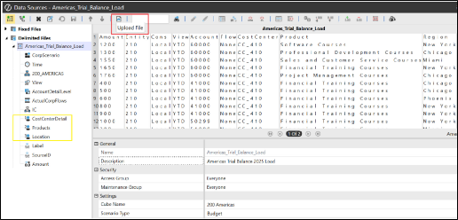
Figure 5.3
Importing That All-Important Data › Creating a Data Source
Assigning Dimensions To Source File
The first two dimensions – Scenario (dimension named CorpScenario) and Time – require a corresponding match in the source file. But, as there is no column to match in the source file, we can select Current DataKey Scenario and Current DataKey Time for the Data Type setting; this will mirror the current workflow Scenario and Time selection when the end user imports the data.
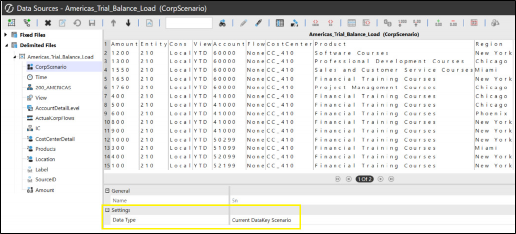
Figure 5.4
Next, we tell OneStream that the Entity members in dimension 200_AMERICAS will find their corresponding Entity in the second source column as shown in Figure 5.5. OneStream’s feature of selecting a character in the corresponding source column and selecting Apply Selection assists with the configuration. Alternatively, the column number can be typed in.
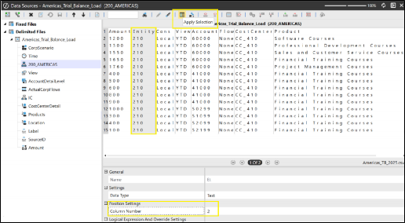
Figure 5.5
The View dimension will be configured to the View source column which, in this case, has YTD (Year to Date) items.
The AccountDetailLevel configured to the Account column.
The ActualCorpFlows configured to the Flow column. In Figure 5.6, the source Flow column items are all None. This can map to the None member in the cube’s Flow dimension, but as this is a template – when the end-user performs the import task and uploads their file – the Flow source column can be other items, such as Activity or EndBalance to map to the Flow dimension Activity or EndBalance members in the cube.
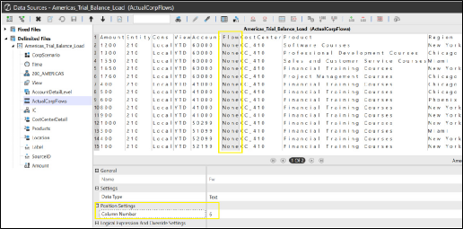
Figure 5.6
For the IC (Intercompany) dimension, this data source template will have a Static Value of None, embedded under the Logical Expression And Override Settings.
Unlike the Flow option, where the None was in the source file and acted as a placeholder, in this case there is no flexibility, and None will always be the target member option, as we believe there will be no intercompany transactions for this import task.
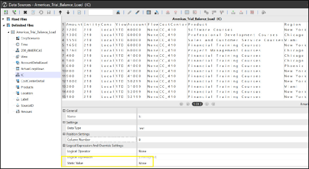
Figure 5.7
All three User Defined dimensions for Cost Center, Products, and Location can map to their corresponding column in the source file.
The Label dimension provides an opportunity to load a description against it. Details such as a bank statement description or trial balance statement might be applicable. In this case, there are no descriptions in the source file.
The SourceID can have the file name populated in the Static Value field. This provides a unique identification of each file. In the event that more than one file is used to load data in our workflow import task, any reload can target the specific file for clearing and loading, rather than having to look through all the files to clear.
Figure 5.8 shows the Text Fill and Substitution Settings that can also be found on other dimension configurations. Text fill settings allow you to define how text values are processed during data import. Options include leading fill values, which prepend specified characters to text values; for example, leading fill value ‘000’ to a data value of ‘34’ will result in ‘034’. The substitution settings will replace characters with others. These settings help ensure that the imported data matches the target format within OneStream.
Finally, the Amount column must be configured for the import to be able to execute. The Amount field is unique because OneStream’s default settings will only import a line if the value in this field is numeric. This ensures that non-numeric rows – such as header lines, which are typically alpha numeric – are automatically skipped. Figure
5.8 illustrates how the numeric settings for the amount source dimension enable precise control over the formatting and characteristics of the imported values.
The thousand, decimal, and currency indicators provide the option to enter which characters separate thousands and decimals in the amount value, as well as the currency symbol for the value.
The positive and negative sign indicator pinpoints which characters in the file – if any – indicate the value is a positive or negative.
The Debit / Credit Mid-Point position allows the user to separate an amount column in the file that has both debits and credits in the same field. The mid-point character entered will then set amounts as debits to the left of it, and credits to the right.
The Zero Suppression feature allows the import values to not include any zero values. The recommendation in most cases is to leave it at the default setting of True.
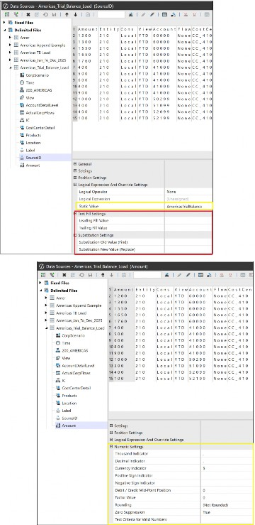
Figure 5.8
Importing That All-Important Data › Creating a Data Source
Creating a Fixed File Data Source
With fixed file mapping, the columns are set by position settings, identifying the start position of the source item and the number of characters for its length.
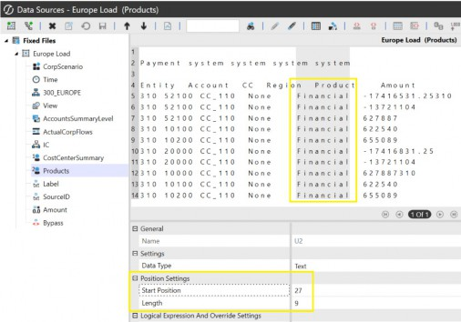
Figure 5.9
There may be a need to ignore items in the files, such as text or numerical data. This can be done by creating a Bypass and selecting which text values to ignore.
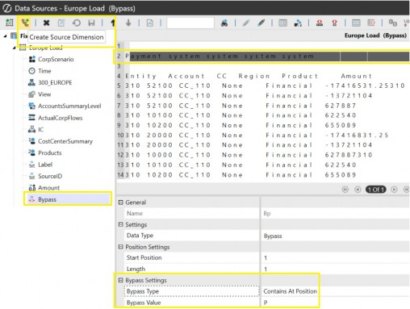
Figure 5.10
Importing That All-Important Data › Creating a Data Source
Matrix Data Source
A matrix data type is used when a fixed or delimited data source has multiple amount columns, as opposed to just one. For example, if each month is a separate column, then all 12 months can be loaded at once. This is useful for budgeting or planning scenarios where work is done on multiple months in the same cycle. The data structure type when the data source is created is required to be set to Matrix Data (as opposed to the Tabular Data setting for amounts in just one column).
A matrix data key is used to map each column to a dimension. Additional source dimensions can be created; in this case, additional Time dimensions can be created for each column in the data source.
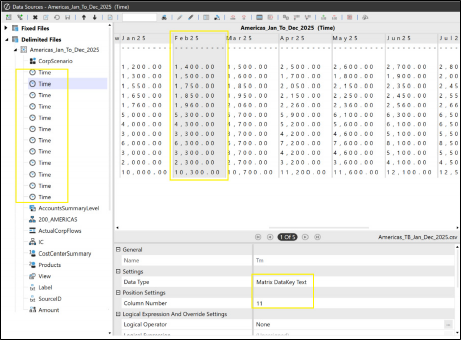
Figure 5.11
Importing That All-Important Data
Transformation Rules
The data sources we have just created direct OneStream on where to find the metadata and data within a file or via a connector. Now, in the next step of the process, we will create transformation rules that direct OneStream on where the data should go.
The need for transformation rules arises because the items in our source file columns may not be the same as the members we use in OneStream.
Why does this situation arise? The reasons why source file contents are different to the target members – and don’t align – are to do with the fact that various entities around the group are using source systems unique to them. Accordingly, as OneStream has been set up to provide a unified set of descriptions – representing the whole group – there will be a mismatch that administrators will have to map.
Also, as we don’t require transactional detail in the cube, mapping rules are set to collate the source detail values to load to summary members in the cube.
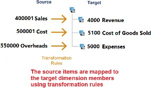
Figure 5.12
Importing That All-Important Data › Transformation Rules
Types of Transformation Rules
The five main types of transformation rules are:
One-To-One
Range
List
Mask
Composite
Importing That All-Important Data › Transformation Rules
One-To-One
The rule maps one source item explicitly to one target dimension member. This makes it the best rule for audit purposes and the only rule used for Scenario, Time, and View dimensions. Figure 5.13 shows that even though the source may be a different code to the target, the import can still take place in the mapped target member.
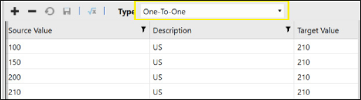
Figure 5.13
Importing That All-Important Data › Transformation Rules
Composite Mapping
These are intended to be conditional mappings, with the set-up showing a combination of members mapped to a target value. In Figure 5.14, the rule expression states that all source item accounts that begin with 52 when aligned with entity 210 should be mapped to New York.
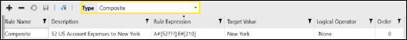
Figure 5.14
Importing That All-Important Data › Transformation Rules
Range
As the name suggests, this is a defined lower to upper limit source, whereby any target member within this range will be mapped to. The range is indicated with the use of a tilde ~ sign.
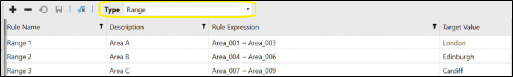
Figure 5.15
Importing That All-Important Data › Transformation Rules
List
Uses a delimited list of source members, each separated by a semi-colon, that all map to the same target member.
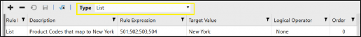
Figure 5.16
Importing That All-Important Data › Transformation Rules
Mask
Uses the question mark (?) to represent a single character and star/asterisks (*) to represent multiple characters as wildcards (can also be stacked, for example, to capture numbers before and after defined characters). These will then map into the target member specified.
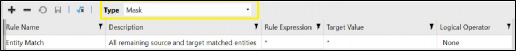
Figure 5.17
Note: There is a processing order with transformation rules, which means no account will clash. For example, the mappings for one-to-one are worked on first by OneStream, followed by composite, range, list, and mask. Known as the first trap method, an account dealt with (or trapped) by a rule will be ignored by subsequent rules. It is also possible to set the order of processing for every line inside each rule. This is done in the order column and provides the opportunity to, for example, deal with more specific mappings first. For example, 821* to run before 82*. When deciding which rule to use, consider the execution order, how easy it will be to maintain future additional members, and overall performance. In terms of performance, a one-to-one will process faster than, say, a mask rule, which could run less efficiently due to the use of question mark and asterisk characters. |
Importing That All-Important Data
Creating Transformation Rules in OneStream – Groups and Profiles
Groups and Profiles are commonly used across the OneStream platform, enabling artifacts built by the administrator to be easily distributed and accessed by the end-user.
A group is a method to organize artifacts. For example, transformation rules are created within a transformation rule group.
A profile is a method of organizing groups and can contain one or many groups. The same group can also be shared across profiles. This prevents an identical group needing to be created for each new profile. Security can be applied to isolate maintenance to just one team, if required. Then, the profiles are assigned to various functions in OneStream (as shown in the example at the end of the chapter).
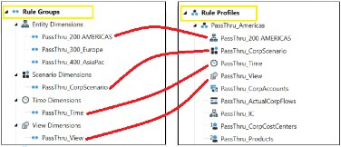
Figure 5.18
Importing That All-Important Data › Creating Transformation Rules in OneStream – Groups and Profiles
Preview Of When The Import Setup Is Used
For completeness, let us preview some of what we will discuss in the Workflow chapter on how the use of data sources and transformation rules end up in the hands of the end user for that all-important final import.
The administrator will add the Data Source and Transformation Profile Name to the Import Workflow Profile, as shown in Figure 5.19.
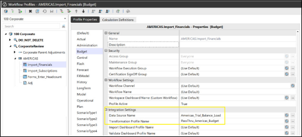
Figure 5.19
This becomes ready for the end-user to import – in OnePlace – when the import task is selected.
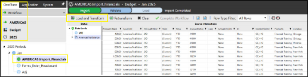
Figure 5.20
Importing That All-Important Data › Creating Transformation Rules in OneStream – Groups and Profiles
Summary of Data Source and Transformation Rule Process
In this chapter, we covered a lot on the setup of the data source and transformation rule. This will eventually lead to the grand finale of importing data when we get to the chapter on Workflow.
Therefore, let us pause for a moment and summarize what we have learnt so far:
Go to the Data Source menu under the Application tab and create one of four types of data source (which can be from a fixed file, delimited file, connector, or data management export sequence). This will also identify the cube where the data will eventually load to, from the OnePlace workflow import task by the end-user.
Assign the dimensions to the source columns.
Create any Bypass additional dimensions (if needed) to ignore text or numerical values in the file.
Create a transformation rule group, building a group for each dimension enabled in the Cube Integration tab.
Define the mapping rule for each transformation rule group that covers each dimension required for the final import.
Create the transformation rule profile and add the rule groups.
Now add both the data source and the transformation rule profile to the import Workflow Profile (discussed later in the book). This will be the final step when importing data.
Importing That All-Important Data
Conclusion
As we have seen, the preparation is twofold for an import to take place. Firstly, the creation of the data source using a file as a template; and then the transformation rules that are built as groups for each dimension before gathering the relevant ones together in a profile.
The data source types range from fixed or delimited files to more advanced connectors, which pull data directly from a source system. When setting up a data source, the source dimensions available (that get configured to the source file columns) all depend on the dimensions that were left enabled when the cube was built, specifically from the Integration tab.
Transformation rules vary from one-to-one (where ongoing maintenance is required, but which provide a good audit trail), to the more integrated forms of mapping, such as composite mapping.
With our initial data import preparation complete, we will now be able to progress – over the following chapters – on taking these artifacts and making them work for us in Workflow Profiles and finally the OnePlace tab, where the data import will take place to eventually get to reporting… our end result.